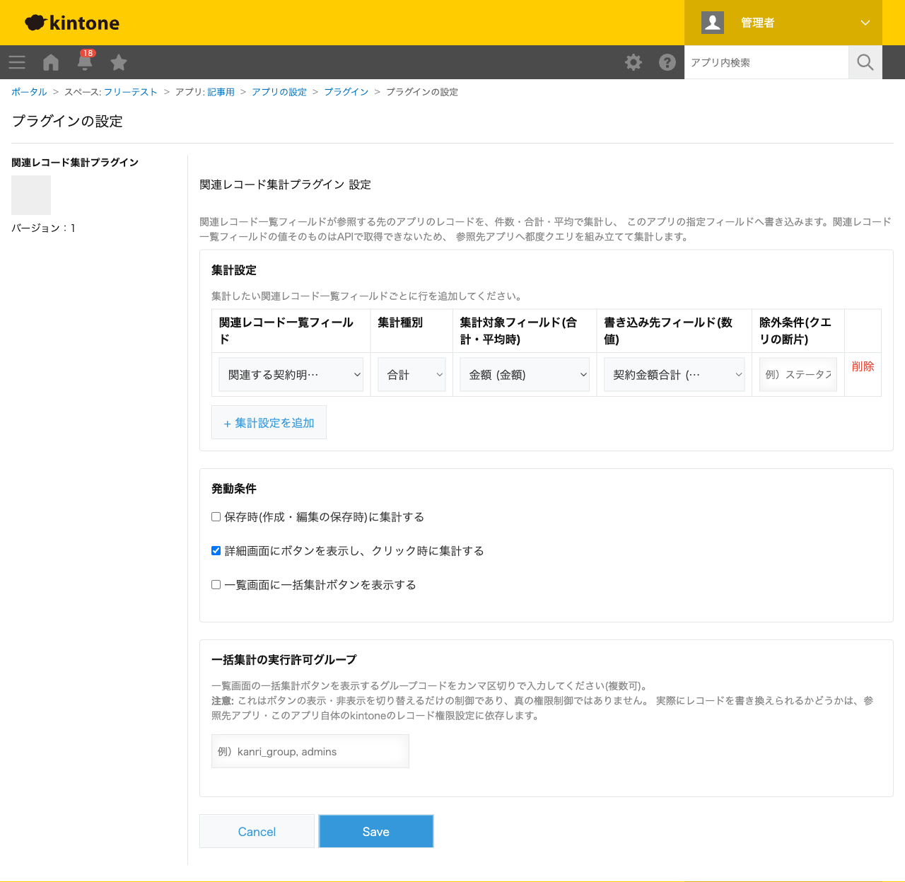
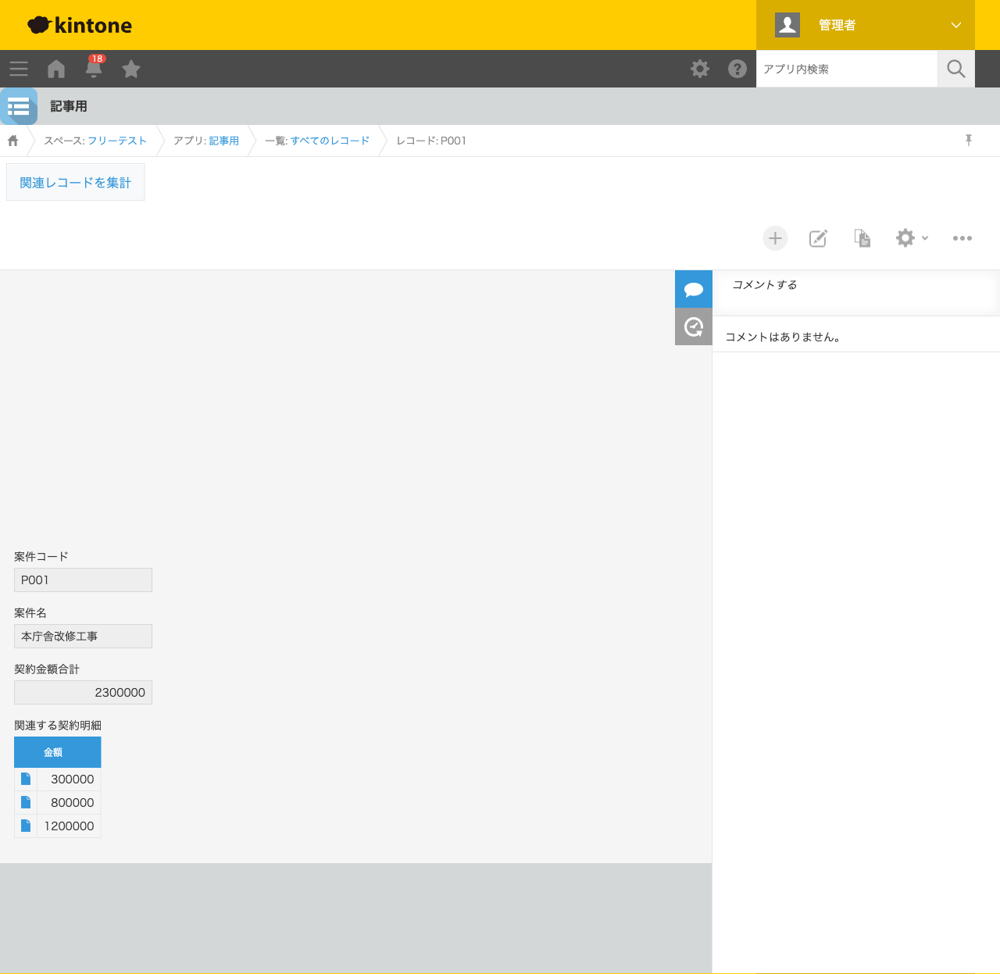

GovAppsプラグイン 安全性を確認できる無料kintoneプラグイン集
案件アプリに「関連レコード一覧」フィールドで契約明細アプリを紐づけていても、その合計金額は 画面を見ながら自分で電卓を叩くしかありません。関連レコード一覧フィールドの値はJavaScript API・ REST APIのいずれでも取得できないという、kintoneの仕様上の制約があるためです。この記事では、 無料プラグインで関連レコードの金額合計を自動計算し、自アプリのフィールドへ書き込む方法を、 実際の設定画面と集計結果つきで解説します。
kintoneの関連レコード一覧フィールドは、参照先アプリのレコードを画面上に一覧表示できますが、 その内容はkintone公式ドキュメントに明記されている通り、JavaScript API・REST APIのいずれでも 取得・登録・更新できません。フィールドの値として合計金額を保持したい場合、標準機能だけでは 実現できず、担当者が都度画面を見て手計算するか、グラフ機能で別途確認する運用になりがちです。 JavaScriptカスタマイズを自作すれば、参照先アプリへのクエリを自分で組み立てて集計できますが、 条件の組み立てや保存時・詳細画面・一覧画面それぞれのタイミングでの実装は簡単ではありません。
「関連レコード一覧フィールドの内容を集計してフィールドへ書き込む」機能を用意する方法は、 大きく4つあります。それぞれの向き不向きをまとめました。
| 方法 | 向いている場合 | 注意点 |
|---|---|---|
| kintone標準機能のみ | 都度画面を見て手計算・グラフ確認でも構わない場合 | フィールドの値として合計を残せない |
| JavaScriptを自作する | 社内に開発者がいて、独自の集計・書き込みタイミングが必要な場合 | 参照先アプリへのクエリ組み立て・集計・書き戻しの実装・保守が必要 |
| 有料の他社プラグイン | 予算があり、手厚いサポートを求める場合 | 月額課金が発生する。ソースコードが非公開で、外部通信の有無を利用者側で確認しにくいことが多い |
| GovAppsプラグイン(このプラグイン) | 無料で試したい、社内・庁内でセキュリティを確認してから導入したい場合 | 集計は件数・合計・平均のみ対応(最大値・最小値等はスコープ外) |
GovAppsのプラグインはすべて無料・広告なしで、追加課金なしで使い続けられます。 ソースコードはGitHubで全公開しているオープンソースなので、 「本当に外部と通信していないか」「集計方法」を自治体・企業のセキュリティ担当者自身の目で 確認できます(このプラグインも個別ページにセキュリティレビュー結果を掲載しています)。
関連レコード集計プラグインは、関連レコード一覧 フィールド・集計種別・集計対象フィールド・書き込み先フィールドを指定するだけで、参照先アプリの 値を集計してくれます。今回は「案件コード」「案件名」「契約金額合計」(数値)・「関連する契約明細」 (関連レコード一覧、参照先=契約明細アプリ)を持つアプリで設定しました。

案件レコードの詳細画面を開くと、ヘッダーに「関連レコードを集計」ボタンが表示されます。押すと、 関連する契約明細アプリの該当レコード(案件コードが一致するもの)を裏側で取得し、金額を合計して 「契約金額合計」フィールドへ書き込みます。今回は契約明細が3件(30万円・80万円・120万円)あり、 合計230万円が「契約金額合計」フィールドに自動で反映されました。

契約明細が追加・変更されたあとは、もう一度ボタンを押すだけで最新の合計に更新されます。 保存時に自動集計する設定にしておけば、ボタンを押し忘れる心配もありません。